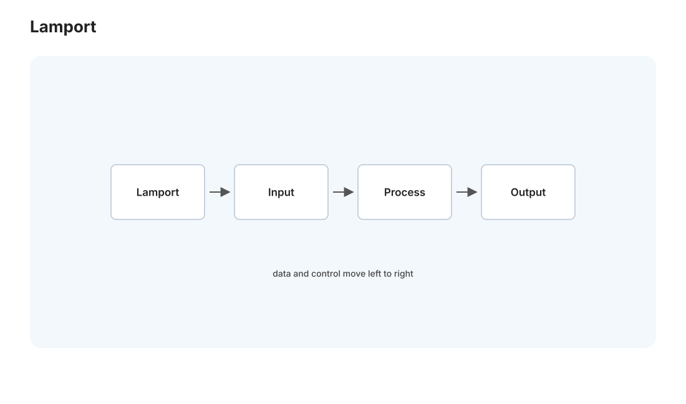
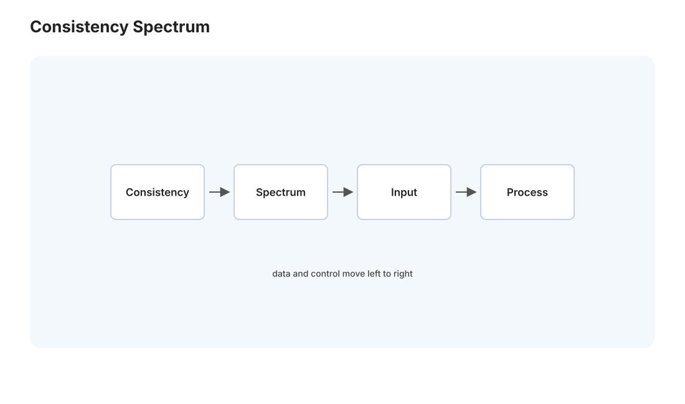

分布式 I · 时钟与一致性模型
对标：MIT 6.824 / Designing Data-Intensive Applications（DDIA）｜ 前置：net 线、db-03（事务、隔离） 分布式系统是"用多台机器协作，对外装成一台可靠机器"的艺术——为了扩展性（一台不够）和容错（一台会挂）。但它引入了单机世界没有的三个恶魔：没有全局时钟、消息会丢会延迟、机器会独立崩溃。这一页建立分布式的世界观：时间为什么不可靠、"一致"到底有几种含义、以及 CAP 定理逼你做的那个残酷取舍。
1. 分布式的三个残酷现实
单机的确定性在分布式里全部失效——"分布式计算的八大谬误" 的核心三条： 1. 网络不可靠：消息会丢失、延迟、乱序、重复（net-01 的 IP 尽力而为，放大到系统级）。 2. 没有共享时钟：每台机器的时钟独立漂移，你无法可靠判断两台机器上的事件谁先谁后。 3. 节点独立故障：一台崩溃时，别的节点分不清它是"挂了"还是"只是慢/网络断了"——这个"无法区分崩溃与缓慢"是分布式最深的困难根源。
这三条推出分布式的一切复杂性。单机程序员的直觉（顺序、时间、"要么成功要么失败"）在这里全要重建。
2. 时间与因果：Lamport 的洞察

既然物理时钟不可靠，怎么给分布式事件排序？Lamport 的洞察：我们真正需要的不是"物理时间"，而是因果顺序（谁导致了谁）。
- 逻辑时钟（Lamport clock）：每个节点维护一个计数器，本地事件 +1、发消息带上计数、收消息取
max(本地, 消息)+1。保证：若 A 因果先于 B，则 clock(A) < clock(B)（反之不成立）。用一个整数捕获因果先后，不需要同步时钟——优雅至极。 - 向量时钟（vector clock）：每个节点存一个"各节点计数"的向量——能精确判断两事件是因果有序还是并发（并发 = 谁也不因果先于谁）。这是检测冲突（如两个副本同时被改）的基础。
读法：分布式里"时间"应理解为"因果依赖"而非"钟表读数"（🔗 与物理站狭义相对论的"同时性相对、因果序绝对"惊人同构——两门学科独立得出"因果比时间根本"）。真实系统也用混合逻辑时钟、或 Google Spanner 的 TrueTime（用原子钟 + GPS 把时钟不确定性界定在几毫秒内，花硬件买回近似全局时钟）。
3. 复制与一致性模型：从强到弱的光谱

为容错和扩展，数据要复制到多个节点。但副本间怎么保持"一致"？——"一致性"不是一个概念，是一条从强到弱的光谱，每档是"正确性 vs 性能/可用性"的不同取舍：
| 一致性模型 | 承诺 | 代价 |
|---|---|---|
| 线性一致（强） | 系统表现得像单一副本、操作看似瞬时生效、全局唯一顺序 | 慢（每次操作要协调）、分区时不可用 |
| 顺序一致 | 所有节点看到相同的操作顺序（但不必是实时的） | 略松 |
| 因果一致 | 有因果关系的操作顺序一致，并发的可不同 | 可用性好、够多数应用 |
| 最终一致（弱） | 停止写入后，副本最终收敛到一致 | 最快最可用，但中间可读到旧值 |
这直接接 db-03 的隔离级别——都是"用一致性强度换性能"的旋钮，只是从单机事务放大到跨机复制。理解"一致性是光谱不是开关"，是分布式设计的核心成熟度。
4. CAP 定理：那个残酷的取舍
CAP 定理：一个分布式系统在网络分区（P，Partition，消息不通）发生时，无法同时保证一致性（C）和可用性（A），只能二选一。
为什么【直觉证明】：网络分区把节点切成两组互不通信。此刻来了个写请求： - 若坚持一致性（CP）：必须拒绝服务（不能让两组各写各的产生分歧）——牺牲可用性。 - 若坚持可用性（AP）：两组都接受请求各自处理——但它们的数据分歧了，牺牲一致性。
关键澄清：CAP 常被误读。分区不发生时，C 和 A 可以兼得；CAP 说的是分区发生时的强制取舍。而分区在真实网络中必然偶尔发生，所以每个分布式系统都隐含选了 CP 或 AP： - CP 系统（一致优先）：Postgres 主从、ZooKeeper、etcd——宁可拒绝服务也不返回错数据（🔗 dist-02 的共识系统都是 CP）。 - AP 系统（可用优先）：Cassandra、DynamoDB、DNS——永远响应，接受最终一致。
方法论："这个系统在网络分区时该拒绝服务还是返回可能过期的数据？"——这个问题的答案决定了你的整个架构。对 Medusa：分析数据晚一点没关系（可 AP/最终一致），但如果有涉及一致性的关键写，就要 CP。没有正确答案，只有适配业务的取舍。（更精细的 PACELC 定理补充：即使无分区，也要在延迟 L 和一致性 C 间取舍。）
5. 练习与要点
例 1（逻辑时钟手算） 三节点互发几条消息，手算每个事件的 Lamport 时间戳，验证"因果先后 ⇒ 时间戳递增"——理解"用整数排因果"，也理解它为什么不能反推（时间戳小不代表因果先）。
例 2（CAP 归类） 给三个系统（银行转账、社交媒体点赞数、DNS）各判该选 CP 还是 AP 并说理由——把 CAP 从定理变成设计判断。点赞数少一个无所谓（AP）、转账不能出错（CP）。
例 3（一致性够不够） Medusa 的"分析卡片展示"和"预测状态更新"分别需要哪档一致性？——大多数读多写少的分析场景最终一致就够，别为不需要的强一致付性能税。\(\blacksquare\)
下一页：分布式 II——共识与 Raft：一群会宕机的机器，怎么对"发生了什么"达成一致。这是分布式的皇冠。